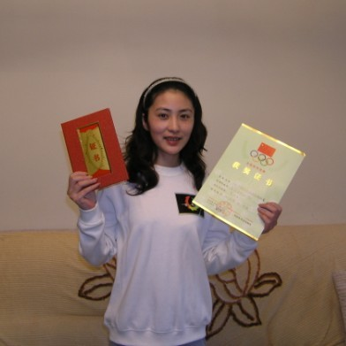
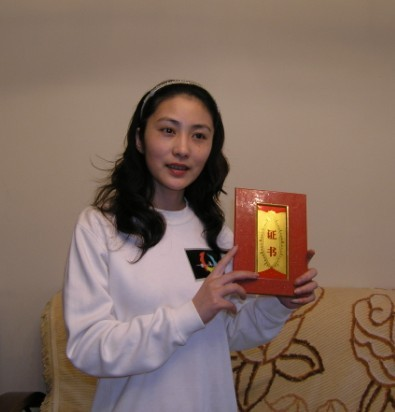
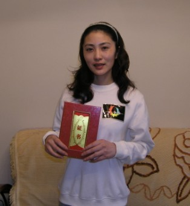
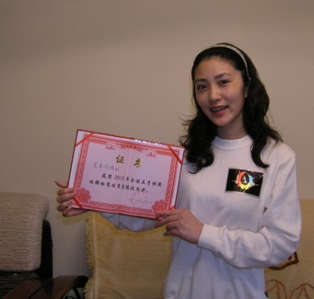
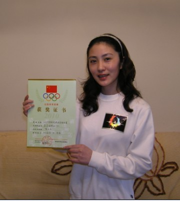
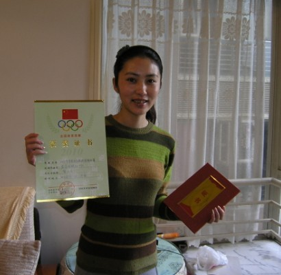

全团有感
首页
茗弈阁
#1 全团有感 作者：茗弈小刀 发表时间：2010-5-4 17:30:32
2010的全团来了，茗弈自己组团这是第一次。大家平时下棋在网上居多，也想检验下自己真实的水平，抱着学习交流的心态，我们报名了。作为社团的创始人，说实话，我是忧喜参半。因为我第一没有工作，也就是说没有实力来资助这次比赛；第二我也在网上试着去拉了赞助单位，但最终无果。所以感到很惭愧呀。但见大家意志坚定，无奈之后和家族管理层商量，决定大家集资来支持比赛。 很感动，大家纷纷献出了一点一滴对社团的爱心。我知道，这里边没有做生意赚大钱的，大家都是把自己的零花钱省下来了。这份情，很重很重......我知道，这里边有大家对社团的支持，有对家族的期望，更有对小刀的信任呀！
茗弈1队获得第七名的好成绩，这和赞助的朋友们是分不开的，让我们记住他们的名字吧：安娜，天涯，荣辉，乐刀，依恋，乖猫，弱惜，秋池，桃李，豫0373，我爱五子棋，断剑，malei，宝贝，妙手，小鹏，深度，水月，日月。最后还要感谢我一位不愿在此透露姓名的徒弟！





［此帖子已被 茗弈小刀 在 2010-5-4 18:53:21 编辑过］
#2 Re:全团有感 作者：小许 发表时间：2010-5-4 18:26:10
你们能成功集资参赛，说明你们感情的深厚，难得！最后恭喜你们取得那么好的成绩！ ［ 茗弈小刀 于 2010-5-4 18:53:45 时花20金币送鲜花一朵］
#3 Re:全团有感 作者：伤情路 发表时间：2010-5-4 21:27:58
同志们辛苦了
#4 Re:全团有感 作者：庞德 发表时间：2010-5-5 8:28:54
 刀儿好漂亮。。。我也要去参加比赛。。。
刀儿好漂亮。。。我也要去参加比赛。。。
#5 Re:全团有感 作者：左伟光 发表时间：2010-5-5 9:51:57
茗弈的明天一定更美好！
#6 Re:全团有感 作者：真树 发表时间：2010-5-5 11:36:24
 so beautiful
so beautiful
#7 Re:全团有感 作者：阔哥 发表时间：2010-5-5 12:01:58
祝贺茗弈，好成绩离不开大家的奋斗和努力，继续努力拿更多的奖状和证书回来
#8 Re:全团有感 作者：举步回眸浅浅笑 发表时间：2010-5-5 12:06:10
 真好,
真好,
#9 Re:全团有感 作者：茗弈的飞猪 发表时间：2010-5-5 14:49:33
身为一个茗弈人而自豪！
#10 Re:全团有感 作者：梦婷 发表时间：2010-5-5 15:30:03
我的刀师父，好漂亮 祝贺茗弈取得好成绩！
祝贺茗弈取得好成绩！［ 茗弈小刀 于 2010-5-5 16:39:29 时奖励此帖[金币加 20 威望加1］